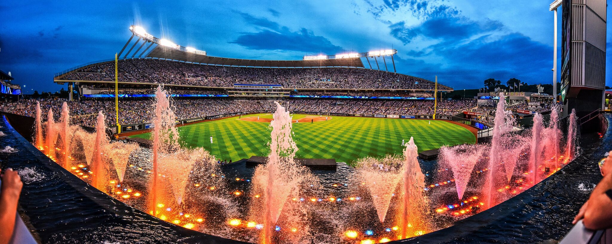

Welcome to the KC Royals Page
The Kansas City Royals were founded in 1969 as an expansion team in Major League Baseball, becoming one of the first teams in the American League’s new expansion era. The franchise was named after Kansas City’s rich history in horse racing, with the name “Royals” symbolizing the city’s royalty in the sport. The Royals' early years were marked by challenges, but they quickly built a strong team that captured the hearts of Kansas City fans. In the 1970s, under the leadership of legendary manager Whitey Herzog, the Royals began to establish themselves as a competitive force in the American League. In 1976, the Royals won their first AL West Division title and made it to the playoffs, marking the start of their rise as a powerhouse. Although they were consistently competitive throughout the 1970s and early 1980s, they faced tough competition and fell short in several postseason appearances. The Royals' most iconic moment came in 1985, when they won their first World Series title. Managed by Dick Howser, the team defeated the St. Louis Cardinals in a dramatic seven-game series, with the legendary George Brett leading the charge at the plate. Brett, one of the greatest hitters of all time, became the face of the franchise during this period, and his role in the team's success in 1985 remains a hallmark of the Royals' history.
Kauffman Stadium
Kauffman Stadium, home of the Kansas City Royals, is one of the most iconic ballparks in Major League Baseball. Located in Kansas City, Missouri, it opened in 1973 and was initially known as Royals Stadium before being renamed in honor of the Royals' original owner, Ewing Kauffman, in 1993. The stadium is part of the Truman Sports Complex, which also houses Arrowhead Stadium, the home of the Kansas City Chiefs, creating a unique dual-sports hub for the city. The proximity of these two stadiums has become a defining feature of Kansas City’s sports culture, with fans often enjoying both baseball and football in the same area.
Hey Neighbor!
The stadium's location next to Arrowhead Stadium, both within the Truman Sports Complex, makes it a unique sporting destination for Kansas City residents and visitors alike. The shared complex allows for an exciting sports atmosphere, where fans can easily transition between events at either stadium. The combined presence of the Royals and the Chiefs in such close proximity adds to Kansas City's reputation as a passionate sports town, making both Kauffman and Arrowhead essential to the city’s identity.
Good times never last long enough...
in the mid-2010s, the Royals began a remarkable resurgence. In 2014, they made a memorable run to the World Series, ultimately falling to the San Francisco Giants in a heartbreaking seven-game series. The following year, the Royals bounced back, winning their second World Series title in 30 years by defeating the New York Mets in five games. This victory, led by key players such as Salvador Perez, Eric Hosmer, and Lorenzo Cain, signaled the team's return to prominence and marked the end of their 30-year championship drought. Since then, the Royals have continued to rebuild with a focus on developing young talent and looking ahead to a future of sustained success. While they’ve faced challenges in recent years, the team's history remains defined by its World Series triumphs, strong player development, and an ever-loyal fan base that remains passionate about their Kansas City Royals.